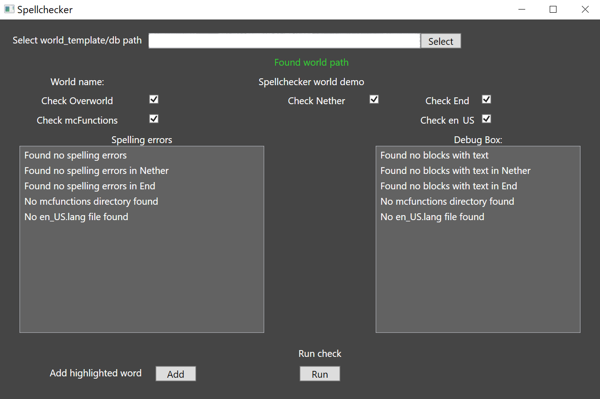
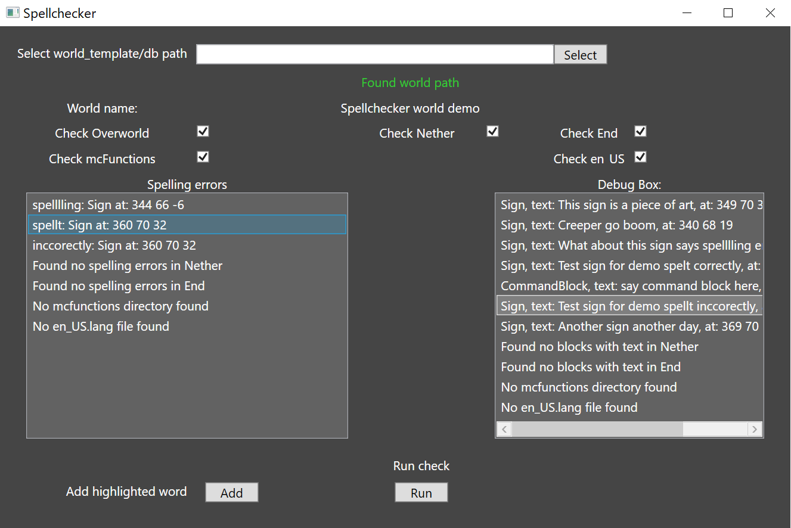

Elias Erkendal
Junior programmer
Elias Erkendal
Junior programmer
I worked on these projects while interning at House of How. I was the only programmer on these tools with some help from my mentor when I got stuck with something that I could not solve or was spending too much time on.
The Minecraft spell checker is a command line and GUI interface tool that was integrated in House of How’s product shipping pipeline. The purpose of the tool is to find spelling errors in Minecraft maps to avoid failing certification and losing weeks of time waiting for approval.
The spell checker opens Minecraft bedrock worlds, searches for signs and command-blocks, takes the blocks text data, split the sentences into words and compare those to a dictionary. If the word is spelt incorrectly the tool will tell the user the word, the location of the sign or command-block and in the debug box it will also show the whole content of the sign or command-block. This way the user can easily determine if the word fits the context and the tool was wrong.
If an error is clicked on it will highlight the debug box's equivalent error to show the user more information
//Read the stream of data to get the writable blocks
if (memoryStream.Position >= memoryStream.Length)
break;
NbtReader nbtReader = new NbtReader(memoryStream, false);
NbtTag tag = nbtReader.ReadAsTag();
NbtCompound compound = (NbtCompound)tag;
foreach (NbtTag compoundTag in compound)
{
if (compoundTag.Name != "id")
continue;
if (compoundTag.StringValue.Equals("Chest")
|| compoundTag.StringValue.Equals("MobSpawner")
|| compoundTag.StringValue.Equals("EnderChest"))
continue;
//Isolate signs and command blocks into a list
if (compoundTag.StringValue.Contains("Sign") && !readableCompounds.Contains(compound))
readableCompounds.Add(compound);
if (compoundTag.StringValue.Contains("CommandBlock") && !readableCompounds.Contains(compound))
readableCompounds.Add(compound);
}
//Check for spelling errors in each word, Currently it will give errors for numbers!
string loweredClearedSplit = clearedSplit[i].ToLower();
//This is for checking words that end with 's. remove the 's and then
//check the word itself and then add it back if the word doesnt exist in the dictionary
if (!wordDictionary.Contains(loweredClearedSplit))
{
if (loweredClearedSplit.EndsWith("'s"))
{
string newClearedSplit = loweredClearedSplit.Remove(loweredClearedSplit.IndexOf("'s"), 2);
if (newClearedSplit == string.Empty)
continue;
if (!wordDictionary.Contains(newClearedSplit))
{
newClearedSplit = clearedSplit[i];
wrongWords.Add(newClearedSplit);
}
}
else if (!wordDictionary.Contains(loweredClearedSplit))
{
wrongWords.Add(clearedSplit[i]);
}
}
The world renamer is a simple command-line tool that changes opens a Minecraft bedrock level.dat file to read and edit the name.
World renamer needs multiple arguments to change a level name. The first being a path to a Minecraft world and the second being the new name. There's also a third optional argument that also changes the levelname.txt file's name. If no new name is entered the program will compare the levelname.txt and level.dat file names to see if they match.
//validate that the leveldat file exists
private static bool ValidateMinecraftWorld(string levelDatPath)
{
if (!levelDatPath.ToLowerInvariant().EndsWith("level.dat") &&
!levelDatPath.ToLowerInvariant().EndsWith("level.dat" + Path.DirectorySeparatorChar) &&
!levelDatPath.ToLowerInvariant().EndsWith("level.dat" + Path.AltDirectorySeparatorChar))
{
levelDatPath = Path.Combine(levelDatPath, "level.dat");
if (File.Exists(levelDatPath))
return true;
else
{
//If file cannot be found maybe user put db folder or even deeper folders
while(!File.Exists(levelDatPath))
{
levelDatPath = Directory.GetParent(levelDatPath).ToString();
levelDatPath = Path.Combine(levelDatPath, "level.dat");
}
if (!File.Exists(levelDatPath))
{
Console.Out.WriteLine("Found no level.dat file found");
return false;
}
}
}
else if (levelDatPath.ToLowerInvariant().EndsWith("level.dat") &&
levelDatPath.ToLowerInvariant().EndsWith("level.dat" + Path.DirectorySeparatorChar) &&
levelDatPath.ToLowerInvariant().EndsWith("level.dat" + Path.AltDirectorySeparatorChar))
{
if (File.Exists(levelDatPath))
return true;
}
return false;
}
private static void ChangeDatLevelName(string leveldatPath, string newName)
{
// read level.dat to get the tree
NbtTree tree = ReadWriteBedrockLevelDat.ReadLevelDatTree(leveldatPath);
// change level.dat
tree.Root["LevelName"].ToTagString().Data = newName;
Console.Out.WriteLine("Changed level.dat name to: " + newName);
// write level.dat tree to a nbt file
ReadWriteBedrockLevelDat.WriteLevelDat(leveldatPath, tree);
}